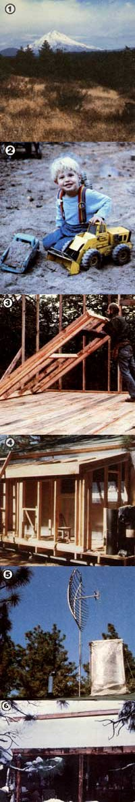

It takes careful planning to be comfortable in the wilderness on . . .
A Homestead East of Mt. Hood
A few years ago-when my wife Sande and I lived in the lush forests of northwestern Oregon-some friends invited us to visit the 80 acres they'd just purchased on the eastern side of Mt. Hood . . . and we discovered that the difference in climate, even though their land was just 60 miles away from our home, was nothing short of remarkable! On the western slope of the magnificent mountain, you see, there are regular rains at least seven months out of the year. . . while, on the eastern side, the weather is generally sunny and dry.
As time rolled by, we became progressively more tired of our area's wet weather and its attendant mud, mold, slugs, and rust . . . and we made quite a few trips over the mountain to "dry out". Rain would be pouring down-as usual-when we left home, but as soon as we crossed the summit from west to east, we would drive into glorious sunshine.
DECISION TIME
Besides being disgusted with the incessant dampness, we were also disturbed that our once quiet road had turned into a highway . . . and new houses were appearing at-to us-an alarming rate. On top of that, the property values in our area had more than doubled in the four years we'd lived there, and the taxes had, of course, kept pace.
So it's not surprising that, in the late summer of 1978, we searched out (and fell in love with) a 108-acre site on the sunny side of the mountain. At an elevation of 2,600 feet and situated about 13 miles from the nearest town, the property offered fantastic views of three peaks and of miles of untarnished countryside. Our homestead-to-be also featured two seasonal creeks ... plenty of pine, fir, and oak trees ... the remains of several log cabins . . . and quite a few acres that had been cleared many years earlier.
We had enough equity in our "wetlands" house to make a down payment on the land and to buy most of the equipment and materials we would need to get started. Nevertheless, actually making the purchase required some tough decisions: It would mean abandoning our 2,000-square-foot home, my workshop, and our stainedglass studio (plus selling or storing our collection of antiques) in exchange for an uncertain future in the wilderness.
Of course, we eventually decided to make the change. We bought the land on a 15-year contract . . . set July 1, 1979 as the target date for our move . . . and started on a course of action that would pay big dividends later: shopping and scrounging for materials and equipment that we knew we'd need in the future.
TEMPORARY SHELTER
Rather than deciding right away where to build our permanent solar home (the property has dozens of "perfect" sites), we opted for the construction of a comfortable temporary cabin . . . which could be finished by the time the snow fell and which we could live in until we acquired a "feel" for our new environs. (We heartily recommend that anyone who relocates to "the boonies" live on the land for at least a year before constructing a permanent dwelling, particularly when moving-as we did-to an area with an unfamiliar climate.)
Our first step was to buy a supply of "scrap" lumber (it came from an old house that was being demolished in Portland). Six pickup loads later, we had nearly enough material to construct our entire cabin. I spent four days framing the structure and putting the roof on, and that was the extent of our home-building progress prior to our moving date.
During the six months immediately preceding our big move, we occupied ourselves with two main projects: first, finding a buyer for our house, and-meanwhile-gathering the ever-increasing list of materials, tools, and equipment that would be much more difficult to obtain later. We visited lumberyards and made some incredible deals on tumbledown piles of wood that the workers were too busy to restack, and on whole lots-of all sizes of planks-that had turned black from the weather. (Most lumberyard customers, it seems, will select fresh-looking, very green wood . . . even though discolored boards are usually pretty well seasoned and won't warp or split as newly cut planks often do.)
While still living near Portland, we also made it a point to take care of as much of our "big city business" as was humanly possible. (Once we'd moved, running such urban errands would require a 200-mile round trip.) We made so many lists that we had to make lists of lists . . . but our preparations would, we were sure, pay off during our coming isolation.
We found a buyer for our house and received the down payment about a month before the Big Day . . . just in time to pick up last-minute items and to pay for the ones we'd left deposits on. Among our most significant buys were a 1955 Case tractor with a front loader, grader blade, and disc . . . the major components for our electrical system . . . and a 16-foot flatbed truck with stake sides that was destined to be our open-top moving van before becoming our farm truck.
THE ENDLESS "BIG DAY"
As the target date approached, we hauled our most weather-resistant be longings to a convenient meadow on the "new" land. After our seventh trip-with the trusty flatbed loaded to 120% of capacity-it became obvious that we owned an obscene amount of junk. 'l considered making a few detours to the dump, but couldn't help thinking how handy each item might someday become ... so-in the end-we kept it all.
Many loads later, we were finally-for better or worse-on our 108 acres of forests and fields ... sitting among great piles of boxes and small mountains of materials.
As fate would have it, July and August set some kind of record for north-central Oregon rainfall, and we were totally unprepared for such downpours in an area that we'd come to refer to as "the land of eternal sunshine". Before we could get to town to buy several large rolls of plastic, a lot of our most cherished possessions were ruined. My shop equipment turned brown with rust, and some of our furniture promptly fell apart. Having moved to the wilds with the coyotes and bears for the purpose of getting away from the rain, we were just a little discouraged . . . but September finally brought the wonderfully sunny weather we'd expected.
While Sande and I worked hard to make our cabin livable, we shared a jury-rigged outdoor kitchen with thousands of yellow jackets. Needless to say, it was nothing short of divine when we finally moved indoors!
THE ELECTRICAL SYSTEM
There're no public utilities near enough to service our new mountain house, and we genuinely enjoy it that way. After having dealt with a power company's monthly rate hikes and intermittent service in our previous home, we're delighted with our own energy system. We have, in fact, all of the electrical conveniences that we were used to in town . . . with none of the hassles, blackouts, or high rates. It's a real pleasure to sit back in our cozy little cabin and enjoy lights, kitchen appliances, and stereo-as well as TV and CB radio-and know we're providing all the necessary power ourselves!
Our home energy system consists of a 3.5-KW generator . . . a bank of heavyduty, commercial, deep-cycle batteries ... an industrial-quality, self-regulating battery charger .. . and a 12-volt to 110-volt AC inverter.
We did a lot of research before investing $1,000 in our Miller combination 3.5-KW generator and 180-amp arc welder. And-even after deciding what we wanted-it took us a while to find a 1,800-RPM unit rather than the more common 3,600-RPM type. The latter machines all seem to have one trait in common: They tend to self-destruct if used on a regular basis. Their excessive speed, and its attendant vibrations and heat buildup, wears them out fast under day-to-day use.
The 1,800-RPM Miller, on the other hand, just quietly putt-putts along and barely gets warm while producing at full capacity for hours on end. It also has electric start capability, and gets more running time from a gallon of fuel than do most smaller generators.
It's our contention, therefore, that folks who are looking for dependable homestead power should stick with a proven, heavy-duty, industrial 1,800-RPM machine (which will usually have a Kohler or Onan engine). The generator won't cost much-if any-more than the units designed for occasional or "emergency" use. (Furthermore, the added bonus of having an arc welder on the homestead is obvious.)
Our house's lighting, television, stereo, water pump, and clock all run on 12-volt DC power. We do, however, have an inverter that's connected to a pair of 110-volt AC outlets placed conveniently for use with regular 110-volt kitchen appliances (our blender, mixer, etc.) and my typewriter or small power tools. These outlets can handle anything up to 550 watts. There's also one outlet in the cabin that can be used-whenever the powerplant is on-for appliances that create loads over 550 watts, such as the vacuum cleaner.
The battery bank will run the house for about a week before needing a charge, and is "filled" automatically whenever I use the generator for power equipment. (A small meter on the wall of the house continuously records the condition of the batteries.)
At present our generator runs on gasoline, but our future plans include an alcohol still (MOTHER's), which will allow us to run our powerplant-and the other engines on our place-with homemade fuel. In the interim, though, the most gasoline we've ever had to use in any one month is six gallons . . . and that was in December with its short days and loads of indoor activities. You could say the fuel expenses are incurred by my workshop, while the house current is free . . . since the charger rarely operates except when I'm working with shop equipment.
In short, the generator power system has proved to be completely trouble-free . . . fully adequate for our needs . . . and, in our opinion, cost-effective.
OTHER NECESSITIES
We have no phone, and-so far-we don't miss the "convenience" or the bills! Instead, we use a CB to communicate with our neighbors (the nearest of whom live a mile away). Although the radio has some limitations, it has gotten us help during a few jams (such as the time our four-wheel-drive pickup was literally buried by a snowstorm).
The area's lack of water, however, has been a more serious problem. Local wells are deep-around 800 feet-and drillers get $14 a foot hereabouts! Our two creeks can supply our water needs for about six months a year, but the rest of the time we've had to rely on a public well located halfway between here and the nearest settlement. Whenever we make a trip to town, we fill a truckload of 55-gallon drums on our way home, and then transfer this water to our 1,200-gallon tank . . . using a little pump that moves about 1,000 gallons of water per quart of gasoline. We built a thoroughly insulated tank house on a platform of used railroad ties, and-when the temperature gets down below freezing-we put a small kerosene lamp inside the building to keep our water from icing up. (We've also installed an on-demand propane water heater . . . as a temporary measure until our solar and woodburning systems are completed.)
At the end of our first summer here, we asked a friend to bring his bulldozer over to put in a half-mile driveway from the cabin to the county road . . . and to carve out a pond whose million-gallon capacity would -we hoped-be sufficient for our nondomestic water needs when the seasonal creeks disappeared. However, after working on the project for a few days, he informed us that the ground was just too hard, and that he'd have to wait until spring to finish the job.
By the time you read this, however, our small lake should be completed . . . along with a bathhouse/sauna/laundry building and a greenhouse. (Eventually, we'll have an attached greenhouse to help heat our permanent home.) And, between the building projects, we'll also have put in our first garden.
A SATISFYING COMMITMENT
As we write, though, we're already delighted to have proved to our own satisfaction that it is possible to build a livable dwelling and not sell one's soul in the process. We have about $3,500 invested in our cabin, a barn/workshop, the tank house, and our electrical systems . . . and that figure includes the $1,000 spent for our generator and some lumber we've not yet used! Of course, we're not about to claim that we or anyone else can "move to the country" and pull it off for $3,500. There're a lot of other costs-such as living expenses, tools and machinery, trucks, appliances, and the land itself-to consider.
And, even though we planned our "wilderness survival" very carefully for months before we moved, our schemes weren't infallible! A change such as ours always involves totally unexpected events ... but we've learned to live a day at a time and not get upset when one of our great ideas turns out to be a dud.
In the meantime, two categories of guests have come to visit our wilderness home: the folks who think we're nuts, and the ones who say they'd love to do the same but "can't". The first group we find amusing, and the second a bit sad. After all, almost anyone can do what we're doing. All that's necessary is a complete commitment ... because going back to the land isn't, we've discovered, readily adaptable to the "try it and see if you like it" school of thought.
We're happy with what we've accomplished so far and grateful for the opportunity to enjoy this beautiful place . . . to walk in the woods for an hour and still be on our own property . . . to experience the clear skies and the peace and quiet ... and to know that our rural lifestyle can only get better!
|
 [1] This is the view of Mt. Hood as seen from the back of our cabin. [2] At first we worried about our son's adjustment to wilderness living, but here's happy Jacob playing ""junior road builder"". [3] The deck is down and the walls are going up... and this is just the first day of work on our future home. [4] Before the cabin was even completed, we decided to put on this addition containing our son's bedroom and a glass-roofed study. [5] For hot showers, we made a temporary setup consisting of an old electric water heater tank in a plastic cover... and it worked! [6] When winter's first real snowfall measured more than four feet - and all but buried our truck - we found out how helpful country neighbors could be! |
|
|